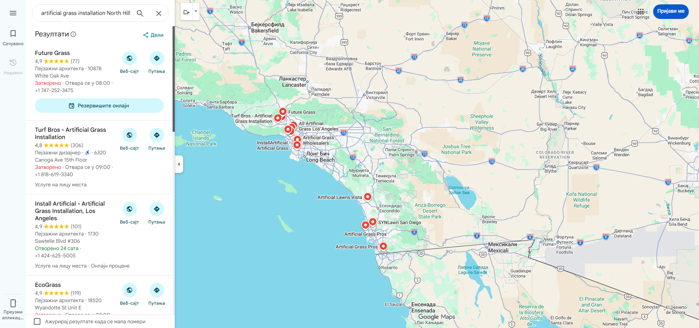
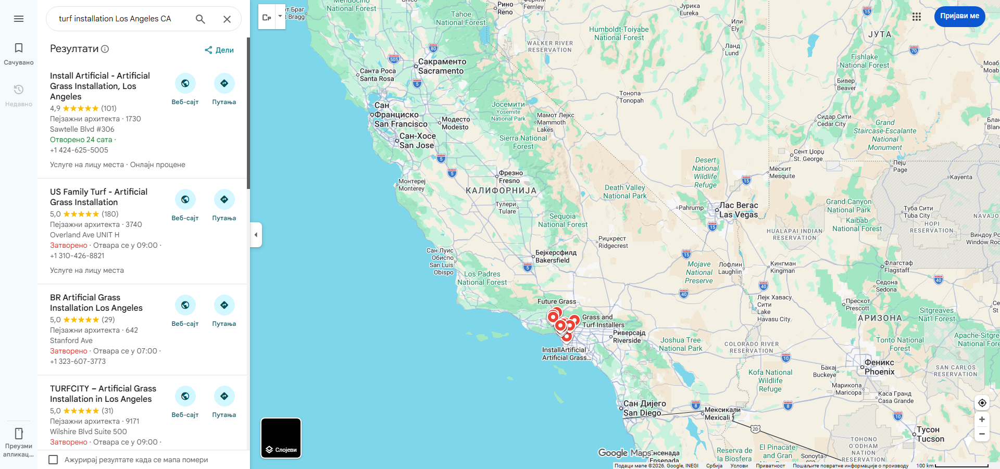
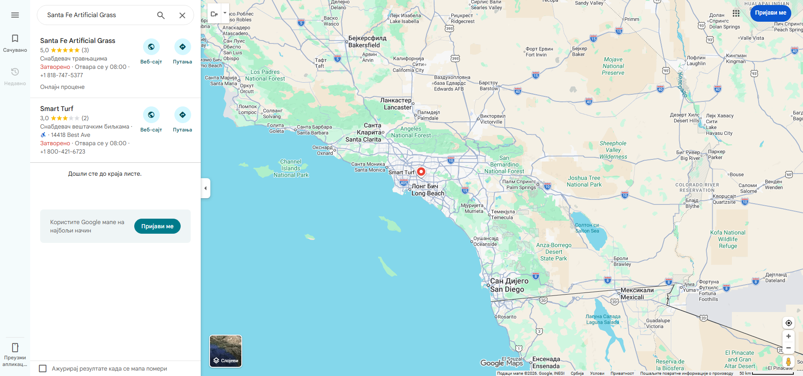
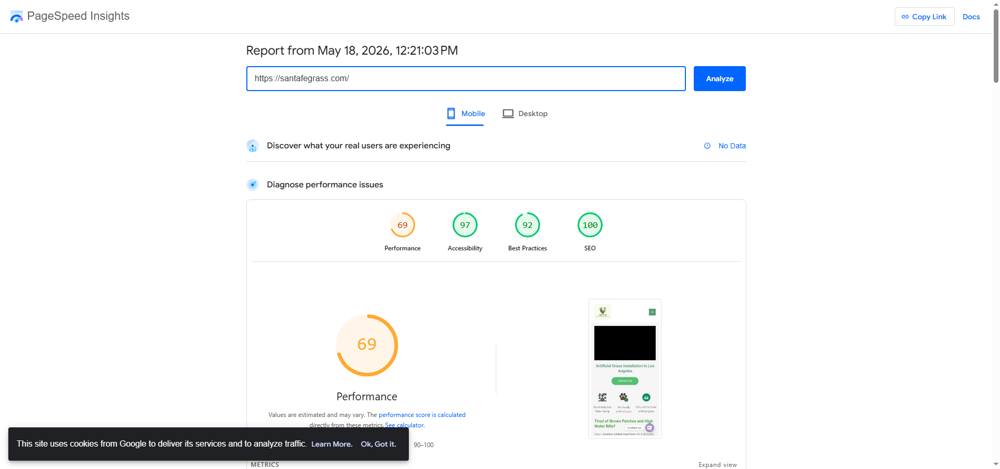
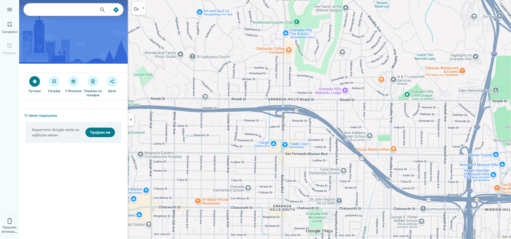
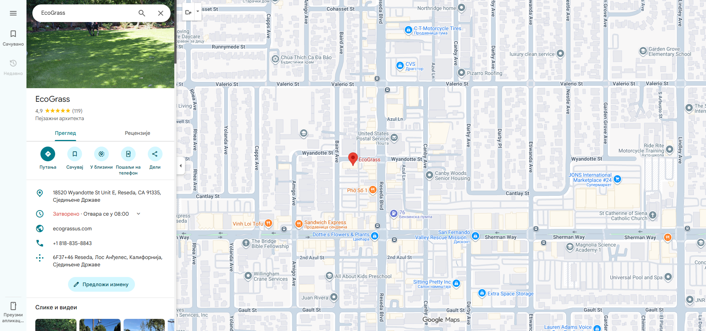

Executive Summary
Santa Fe Artificial Grass (santafegrass.com) is an artificial grass installation company serving North Hills and the greater Los Angeles area. Despite having a functional website and a claimed Google Business Profile, the business is essentially invisible in local search — appearing in zero local pack results and zero organic search results across all tested keywords.
The 3 Biggest Issues Found
santafegrass.com does not appear in ANY Google search results — not in the local 3-pack, not in organic results — for any of the 9 high-value keywords tested. Google has indexed only 1 page (the homepage). The site is functionally invisible to potential customers searching for artificial grass installation in North Hills, San Fernando Valley, or Los Angeles.
The Google Business Profile lists phone (818) 747-5377 but the website shows (818) 578-4790. This NAP inconsistency confuses Google and undermines trust signals. The website phone number returns zero results when searched on Google Maps.
Santa Fe has just 3 Google reviews. Direct competitors in the San Fernando Valley have 45-306 reviews. Review volume is one of the strongest local ranking factors — this gap alone makes competing in the local pack nearly impossible.
Section 1: Google Maps / Local Pack Performance
1.1 Current Local Pack Rankings
Santa Fe Artificial Grass was tested across 9 high-value keywords. The business did not appear in any local pack or organic results:
| Keyword | Local Pack Position | Top 3 Local Pack Winners (Reviews) |
|---|---|---|
| "artificial grass installation North Hills CA" | Not showing | Future Grass (77), Turftopia (45), EcoGrass (119) |
| "artificial turf installer Los Angeles" | Not showing | BR Artificial Grass (29), Install Artificial (101), TurfCity (31) |
| "synthetic grass North Hills" | Not showing | No local pack shown |
| "artificial grass San Fernando Valley" | Not showing | Artificial Turf Wholesalers (4), Simple Turf (162), EcoGrass (119) |
| "pet turf installation North Hills CA" | Not showing | Turftopia (45), Future Grass (77), EcoGrass (119) |
| "artificial lawn installation near me" | Not showing | BR Artificial Grass (29), US Family Turf (180), Install Artificial (101) |
| "turf installer Granada Hills" | Not showing | No local pack; Future Grass in knowledge graph |
| "artificial grass Northridge CA" | Not showing | Results truncated — Yelp/Thumbtack dominate |
| "fake grass installation Los Angeles" | Not showing | BR Artificial Grass (29), Install Artificial (101), US Family Turf (180) |


1.2 Organic Search Rankings
Santa Fe Grass also does not appear in organic search results for any tested keywords. A site:santafegrass.com search reveals only 1 page indexed (the homepage). This confirms a severe indexation issue — the site has 28 crawlable pages per SEMrush but Google has indexed just one.
1.3 Why Santa Fe Grass Is Invisible
The combination of factors creating this invisibility:
- Only 3 Google reviews — Competitors have 29-306 reviews
- Only 1 page indexed — Google can't rank pages it hasn't indexed
- No service pages or location pages — The site lacks dedicated pages targeting specific keywords
- GBP category is "Turf supplier" — Should be "Artificial grass installer" or "Landscaper"
- Service-area business with no visible address — Reduces local pack eligibility
- Phone number mismatch between GBP and website
Section 2: Google Business Profile Audit
2.1 GBP Listing Overview
One GBP listing was found for "Santa Fe Artificial Grass." No duplicate listings were detected.

| Element | Current Status | Assessment |
|---|---|---|
| Business Name | Santa Fe Artificial Grass | OK |
| Rating | 5.0 stars | Perfect |
| Review Count | 3 reviews | Critical gap — competitors have 45-306 |
| Primary Category | Turf supplier | Wrong — should be "Artificial grass installer" or "Landscaper" |
| Address | Hidden (service-area business) | Limits local pack appearance |
| Phone (GBP) | (818) 747-5377 | MISMATCH — Website shows (818) 578-4790 |
| Website URL | santafegrass.com | OK |
| Hours | Mon 8-6, Tue-Sat 8-6:30 | OK |
| Google Posts | Not visible | No recent posts found |
| Review Responses | Unknown | Should respond to all reviews |
| Photos | Not visible | Should have 20+ project photos |
| Business Description | Unknown | Should be keyword-rich |
| Services Section | Unknown | Should list all services |
- Fix the phone number — Make GBP and website phone numbers match
- Change primary category from "Turf supplier" to "Artificial grass installer" or "Landscaper"
- Add secondary categories: Lawn care service, Artificial turf supplier, Landscape designer
- Upload 20+ project photos with descriptive filenames
- Post Google Posts weekly — before/after projects, tips, offers
- Populate the services section with all services and descriptions
- Write a keyword-rich business description
Section 3: Website Technical SEO
3.1 Schema Markup Assessment
Google Rich Results Test detected 4 valid schema items on santafegrass.com:
| Schema Type | Santa Fe Grass | EcoGrass (Competitor) |
|---|---|---|
| LocalBusiness | Present (with non-critical issues) | Present |
| Organization | Present (with non-critical issues) | Present |
| Breadcrumbs | Present | Missing |
| Articles | Present | Missing |
| WebSite | Missing | Present |
| FAQPage | Missing | Present (6 questions) |
| Service | Missing | Present |
| AggregateRating | Missing | Missing |
| GeoCoordinates | Missing | Present |
Note: The LocalBusiness schema has 22 invalid structured data items per SEMrush. These need to be fixed to ensure Google can properly read the schema.
3.2 On-Page SEO (Homepage)
| Element | Current | Assessment |
|---|---|---|
| Title Tag | "Best Artificial Grass Installers in California | Free Quotes | Santa Fe Grass" | Too broad — should target "North Hills" or "Los Angeles" |
| Meta Description | "Artificial Grass Installation in Los Angeles..." | Incomplete/truncated |
| H1 Tag | Not detected | Missing — 5 pages lack H1 per SEMrush |
| Content Depth | ~800-1,200 words | Low — competitors have 1,500-2,000+ |
| FAQ Section | Not present | Missing — EcoGrass has 6 FAQs |
| Service Pages | None dedicated | Critical gap — need pages for each service |
| Location Pages | None | Critical gap — competitors have 10+ location pages |
| Blog | 1 post ("Hello World") | No content strategy |
| Pricing | Not shown | Competitors show pricing — builds trust |
3.3 Technical Checks
| Check | Result | Status |
|---|---|---|
| HTTPS | Site loads on HTTPS | OK |
| robots.txt | Present, blocks WooCommerce logs & admin | OK |
| Sitemap | Present at /sitemap.xml (6 sub-sitemaps) | OK |
| Pages in Sitemap | ~28 pages across sub-sitemaps | OK but low count |
| Pages Indexed | Only 1 page indexed (site: search) | Critical — 27 pages not indexed |
| Canonical Tags | Present via AIOSEO | OK |
| Internal Nofollow Links | 23 internal links with nofollow | Wasting link equity |
Section 3A: Page Performance & Core Web Vitals
Google PageSpeed Insights was run on May 18, 2026 for santafegrass.com.

Core Web Vitals Assessment: NO DATA
The Chrome UX Report has no real-user data for santafegrass.com, indicating the site receives very little traffic. This itself confirms the visibility problem.
Lighthouse Lab Scores (Mobile)
Lab Metrics Detail
| Metric | Value | Status | Good Threshold |
|---|---|---|---|
| First Contentful Paint (FCP) | 3.6s | Poor | < 1.8s |
| Largest Contentful Paint (LCP) | 4.8s | Poor | < 2.5s |
| Total Blocking Time (TBT) | 50ms | Good | < 200ms |
| Cumulative Layout Shift (CLS) | Low | Good | < 0.1 |
| Speed Index | 6.9s | Poor | < 3.4s |
Section 3B: SEMrush Technical Site Audit
A SEMrush Site Audit was run on May 18, 2026, crawling santafegrass.com.

Site Audit Overview
Issues Found
| Severity | Issue | Affected |
|---|---|---|
| ERROR | 22 structured data items are invalid | 22 items |
| WARNING | 23 outgoing internal links contain nofollow attribute | 23 links |
| WARNING | 17 pages have low text-HTML ratio | 17 pages |
| WARNING | 10 pages have a low word count | 10 pages |
| WARNING | 5 pages don't have an H1 heading | 5 pages |
Issue Categories
| Category | Issues |
|---|---|
| Crawlability | 5 issues |
| Content | 3 issues |
| Meta Tags | 3 issues |
| AI Search | 2 issues |
- Fix invalid structured data (22 items) — Validate JSON-LD against schema.org and fix errors
- Remove nofollow from 23 internal links — Internal links should pass link equity freely
- Add content to 10 thin pages — Minimum 300 words per page, ideally 800+
- Improve text-HTML ratio on 17 pages — Add more text content relative to code
- Add H1 headings to 5 pages — Every page needs exactly one H1
Section 4: Citation Consistency Audit
Canonical NAP (from website): Santa Fe Grass / Santa Fe Artificial Grass • (818) 578-4790 • sfartificial@gmail.com • santafegrass.com
| Source | Name | Phone | Website | Status |
|---|---|---|---|---|
| Google Business Profile | Santa Fe Artificial Grass | (818) 747-5377 MISMATCH | santafegrass.com | PHONE MISMATCH |
| Website | Santa Fe Grass | (818) 578-4790 | santafegrass.com | Reference |
| Yelp | Santa Fe Artificial Grass | Unknown | Unknown | Listing exists but details unverified |
| Linked from site | Unknown | Unknown | Page exists, details not extractable | |
| BBB | No listing found | NOT LISTED | ||
| Apple Maps | Not checked (requires device) | UNKNOWN | ||
| Bing Places | Not extractable | UNKNOWN | ||
| Yellow Pages | Access denied (403) | UNKNOWN | ||
| Thumbtack | Not listed | NOT LISTED | ||
| HomeAdvisor/Angi | Not checked | UNKNOWN | ||
| Houzz | Not checked | UNKNOWN | ||
Citation Score: Very Poor
Santa Fe Artificial Grass has minimal citation presence. The business was found on only Google and Yelp. BBB and Thumbtack had no listing. The most critical issue is the phone number mismatch on Google Business Profile.
- Fix GBP phone number immediately — Match to website (818) 578-4790
- Claim and complete Yelp listing with consistent NAP + photos
- Complete Facebook business page with all details
- Submit to: BBB, Apple Maps, Bing Places, Yellow Pages, MapQuest, Angi, Thumbtack, HomeAdvisor, Houzz, Manta, Foursquare
- Ensure consistent NAP across ALL listings — same name, address, phone, website on every platform
Section 5: Competitive Benchmarking
5.1 Local Pack Competitors (San Fernando Valley / North Hills Area)
| Competitor | Location | Google Reviews | Rating | Schema | Blog | Key Strengths |
|---|---|---|---|---|---|---|
| Santa Fe Artificial Grass | North Hills | 3 | 5.0 | Partial (4 types, 22 errors) | None | Perfect rating, schema present |
| Future Grass | Granada Hills | 77 | 4.9 | None (Wix site) | None | Local pack #1, booking enabled, 20+ yrs |
| EcoGrass | Reseda | 119 | 4.9 | 3 types (LocalBusiness, Org, WebSite) | Active | Blog, FAQ, CSLB license, multi-city |
| Turftopia | Northridge | 45 | 5.0 | Unknown | Unknown | Perfect rating, nearby location |
| Install Artificial | Los Angeles (West) | 101 | 4.9 | Present | Location pages | Open 24hrs, online estimates, location pages |
| Turf Bros | LA County | 306 | 4.8 | Unknown | Service area pages | Highest review count, family-owned |
| US Family Turf | Los Angeles | 180 | 5.0 | Unknown | Unknown | High reviews with perfect rating |
| Simple Turf / Irrigation Express | San Fernando | 162 | 4.8 | Present | Content-rich | Local warehouse, 5+ year history |


5.2 What Competitors Do That Santa Fe Doesn't
| Feature | Santa Fe | Future Grass | EcoGrass | Install Artificial |
|---|---|---|---|---|
| Dedicated Service Pages | No | Limited | Yes (5+) | Yes (10+) |
| Location/Area Pages | No | No | Yes (multi-city) | Yes (20+) |
| Blog / Content Strategy | No | No | Active blog | Some content |
| FAQ Section | No | No | 6 FAQs | Yes |
| Online Booking | No | HouseCall Pro | No | Online estimates |
| Pricing Transparency | No | No | Product prices only | Per sq.ft. pricing |
| CSLB License Displayed | No | No | CSLB #999886 | No |
| Review Volume (Google) | 3 | 77 | 119 | 101 |
Section 6: Prioritized Action Plan
Critical Priority DO THIS WEEK
| # | Action | Impact | Effort |
|---|---|---|---|
| 1 | FIX GBP PHONE NUMBER — Change GBP phone to match website (818) 578-4790 OR update website to match GBP | CRITICAL | Low |
| 2 | Change GBP primary category from "Turf supplier" to "Artificial grass installer" or "Landscaper" | CRITICAL | Low |
| 3 | Add secondary GBP categories: Lawn care service, Landscape designer, Turf supplier | HIGH | Low |
| 4 | Upload 20+ project photos to GBP with keyword-rich descriptions | HIGH | Medium |
| 5 | Write GBP business description with service keywords and service areas | HIGH | Low |
High Priority WITHIN 30 DAYS
| # | Action | Impact | Effort |
|---|---|---|---|
| 6 | Investigate indexation issue — Why are only 1 of 28 pages indexed? Check Google Search Console for errors, noindex tags, crawl issues | CRITICAL | Medium |
| 7 | Fix 22 invalid structured data items — Validate and correct all JSON-LD errors | HIGH | Medium |
| 8 | Create 5-8 dedicated service pages: Residential Installation, Commercial Installation, Pet Turf, Putting Greens, Landscape Design, Turf Maintenance | HIGH | High |
| 9 | Create 5-8 location pages: North Hills, Granada Hills, Northridge, Reseda, Van Nuys, Chatsworth, Woodland Hills, Encino | HIGH | High |
| 10 | Add H1 headings to all 5 pages missing them | MED | Low |
| 11 | Remove nofollow from 23 internal links | MED | Low |
| 12 | Start review generation campaign — Ask every happy customer for a Google review. Target 5+ reviews/week | CRITICAL | Ongoing |
Medium Priority 30-60 DAYS
| # | Action | Impact | Effort |
|---|---|---|---|
| 13 | Build citations across 15+ directories (Yelp, BBB, Bing Places, Apple Maps, Thumbtack, HomeAdvisor, Houzz, etc.) | HIGH | Medium |
| 14 | Launch blog targeting PAA queries (cost of artificial grass, how long does turf last, pet turf vs real grass, etc.) | MED-HIGH | Ongoing |
| 15 | Add FAQ sections to homepage and service pages with FAQPage schema | MED | Medium |
| 16 | Improve page speed — Compress images to WebP, optimize hero image, evaluate hosting | MED | Medium |
| 17 | Add pricing transparency — Per sq.ft. pricing ranges on service pages | MED | Low |
| 18 | Display contractor license (CSLB) if applicable — builds trust like EcoGrass | MED | Low |
| 19 | Add online booking/estimate request functionality | MED | Medium |
Ongoing MONTHLY
| # | Action | Frequency |
|---|---|---|
| 20 | Google Posts (before/after projects, tips, offers) | 2-3x/week |
| 21 | Review generation (ask every customer) | After every job |
| 22 | Respond to ALL reviews within 24 hours | Daily |
| 23 | Blog content (2-4 posts/month) | Monthly |
| 24 | Upload new project photos to GBP and website | Weekly |
| 25 | Monitor local pack rankings for top 10 keywords | Weekly |
Section 7: 90-Day Roadmap
Weeks 1-2: GBP & Foundation Fixes
- Fix GBP phone number mismatch
- Change GBP category to "Artificial grass installer"
- Add secondary categories, business description, services
- Upload 20+ project photos to GBP
- Start posting to Google Posts 2-3x/week
- Begin review generation campaign
- Register for Google Search Console and investigate indexation
Weeks 3-4: Website Content & Technical
- Fix 22 invalid structured data items
- Create 5 dedicated service pages
- Create 5 location pages (North Hills, Granada Hills, Northridge, etc.)
- Add H1 headings to 5 pages missing them
- Remove nofollow from 23 internal links
- Add content to 10 thin pages
Weeks 5-8: Citations & Content
- Build citations across 15+ directories
- Launch blog with first 4-6 posts
- Add FAQ sections with FAQPage schema
- Optimize page speed (WebP images, hosting)
- Add pricing ranges to service pages
- Continue review generation (target: 30+ total reviews)
Weeks 9-12: Growth & Optimization
- Create remaining location pages (5+ more cities)
- Add online booking/estimate functionality
- Display contractor license and trust badges
- Expand blog with 4+ more posts
- Measure progress: rankings, traffic, reviews, leads
- Target: 50+ Google reviews
Success Metrics
| Metric | Current (May 2026) | 90-Day Target |
|---|---|---|
| Google Reviews | 3 | 50+ |
| Local Pack appearances (9 keywords) | 0/9 | 3-4/9 |
| Pages indexed by Google | 1 | 25+ |
| Service pages | 0 | 5-8 |
| Location pages | 0 | 8-10 |
| Citation listings | 2 (Google, Yelp) | 15+ |
| Blog posts | 0 (just "Hello World") | 8-10 |
| GBP Posts per month | 0 | 8-12 |
| Invalid schema items | 22 | 0 |
| Lighthouse Performance | 69/100 | 80+/100 |
Section 8: Quick Reference
What Santa Fe Artificial Grass Does Well
- Perfect 5.0 Google rating
- Has LocalBusiness and Organization schema markup (4 schema types detected)
- HTTPS enabled
- Sitemap present and properly structured
- Lighthouse SEO score: 100/100
- Lighthouse Accessibility score: 97/100
- Good TBT (50ms) and CLS metrics
- Professional-looking website with clear service messaging
- robots.txt properly configured
What Needs to Change
- FIX GBP PHONE MISMATCH — (818) 747-5377 on GBP vs (818) 578-4790 on website
- Change GBP category from "Turf supplier" to "Artificial grass installer"
- Solve indexation crisis — Only 1 of 28 pages indexed
- Build reviews aggressively — 3 reviews vs competitors' 45-306
- Create service and location pages — Currently zero of each
- Fix 22 invalid structured data items
- Build citations across 15+ directories
- Start content marketing — Blog, FAQ sections, Google Posts
- Improve page speed — LCP 4.8s (target: <2.5s), FCP 3.6s (target: <1.8s)
- Add H1 headings to 5 pages missing them
- Remove nofollow from 23 internal links